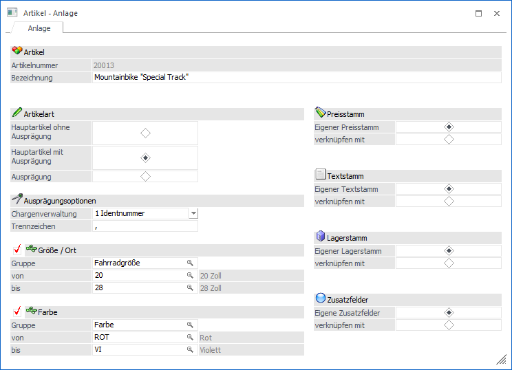
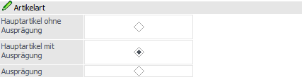
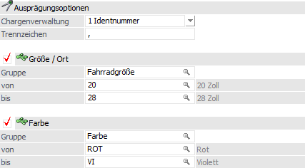
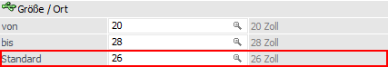
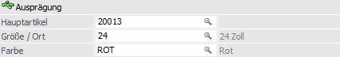
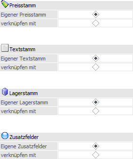

Wenn im Artikelstamm eine nicht vorhandene Artikelnummer im Feld "Artikelnummer" eingegeben wird, so öffnet sich automatisch das Register "Anlage". Hier kann definiert werden, ob es sich um einen Ausprägungsartikel (Chargenartikel, Artikel in verschiedenen Größen, usw.) handelt und ob Stammdatenbereiche (Preisstamm, Textstamm, Lagerstamm und / oder Zusatzfelder) auf einen bereits bestehenden Artikel verweisen sollen.

Ø Artikelbezeichnung
Hier kann die Bezeichnung eines Artikels hinterlegt werden (max. 255stellig und alphanumerisch).
Achtung
Wird ein * in die Artikelbezeichnung eingetragen (z.B. bei diversen Artikel), dann springt der Cursor bei dem erfassen von Belegen automatisch in das Bezeichnungsfeld um die jeweilige Bezeichnung des diversen Artikels einzutragen zu lassen (diese wird dann auch bei der Statistik angedruckt).
Besonderheit bei Neuanlage
Bei der Neuanlage eines Artikels kann über das Feld "Bezeichnung" ein Artikel verdoppelt (kopiert) werden. Hierfür wird die Taste F9 gedrückt und aus dem "Artikel Matchcode" der gewünschte Artikel ausgewählt.
Artikelart

An dieser Stelle kann definiert werden um was für eine Art von Artikel es sich handelt.
Ø Hauptartikel ohne Ausprägung
Es handelt sich um einen Hauptartikel ohne Ausprägungen (ohne Größe, Farbe, Identnummer, Chargennummer, etc.).
Hinweis
Bei Artikeln dieser Art können im Fernster "Artikel - Anlage" nur noch die Stammverweise definiert werden.
Ø Hauptartikel mit Ausprägung
Es handelt sich um einen Hauptartikel mit Ausprägungen. Unter Ausprägungsartikel versteht man in WinLine FAKT Artikel, die in mehreren Varianten / Arten erhältlich sind, z.B. mehrere Farben, Größen, etc. und / oder mit Ident- oder Chargennummer geführt werden.
Ø Ausprägung
Es handelt sich um eine Ausprägung. Diese Art wird ausgewählt, wenn zu einem bereits bestehenden Hauptartikel mit Ausprägung noch eine weitere Ausprägung angelegt werden soll.
Beispiel
Der Artikel CZ010 (Hauptartikel mit Ausprägungen) wird nun auch in der Farbe "Violett" angeboten. Dieses war bei der Artikelanlage des Artikels CZ010 noch nicht der Fall.
Eingabefelder bei der Artikelart "Hautpartikel mit Ausprägung"

Ø Chargenverwaltung
Hier kann definiert werden, ob der Artikel auch mit Ident- bzw. Chargennummern geführt werden soll oder ob das LIFO- bzw. FIFO-Verfahren zum Einsatz kommt.
ü 0 - Charge
Der Artikel wird mit
Chargen geführt.
ü 1 - Identnummer
Der Artikel
wird mit Identnummer geführt.
ü 2 - Keine
Der Artikel wird ohne
Chargen- oder Identnummer geführt und nicht nach dem LIFO- bzw. FIFO-Verfahren
behandelt.
ü 3 - LIFO
Der Artikel wird nach
dem LIFO-Verfahren (Last in First out) behandelt, d.h. die "zuletzt" zugebuchte
Menge wird beim Verkauf zuerst vorgeschlagen (die Reihenfolge wird anhand des
Ablaufdatums festgelegt)
.
ü 4 - FIFO
Der Artikel wird nach
dem FIFO-Verfahren (First in First out) behandelt, d.h. die "zuerst" zugebuchte
Menge wird beim Verkauf zuerst vorgeschlagen (die Reihenfolge wird anhand des
Ablaufdatums festgelegt).
Hinweis
Angelegt werden die einzelnen Ausprägungen (Chargennummern, Identnummern, LIFO-Chargen und FIFO-Chargen) bei der späteren Zubuchung der Artikel (z.B. per Datenimport, Lagerbuchhaltung oder Belegerfassung).
Ø Trennzeichen
An dieser Stelle wird das Trennzeichen aus dem Programmbereich "Ausprägungen initialisieren" vorgeschlagen. Dieses Zeichen wird in der Folge automatisch zwischen der Artikelnummer und den Ausprägungen gesetzt und sollte normalerweise in keiner Artikelnummer vorkommt (z.B. ";").
Ø Ausprägung 1 (hier "Größe / Ort") / Ausprägung 2 (hier "Farbe")
Durch Aktivierung der jeweiligen Checkbox wird die Ausprägung 1 oder Ausprägung 2 (bzw. beide) aktiviert.
Hinweis
Die Definition der beiden Ausprägungen findet im "Ausprägungen verwalten" (WinLine FAKT - Stammdaten - Ausprägungen - Ausprägungen verwalten) statt (nähere Informationen entnehmen Sie bitte dem Kapitel Ausprägungen verwalten).
Um welche Ausprägungsgruppe es sich handelt (z.B. "Fahrradgröße") wird über das Feld "Gruppe" definiert, wobei über das Lupen-Symbol oder die Taste F9 der "Ausprägungsgruppenmatchcode" aufgerufen werden kann.
In den Feldern "von / bis" wird anschließend die erste und die letzte Ausprägung dieser Gruppe vorgeschlagen. D.h. der Artikel wird mit allen Ausprägungen, die in diesem Bereich (welcher auch verringert werden kann) liegen, angelegt.
Hinweis
Sollten innerhalb des "von / bis"-Bereichs Ausprägungen aufgeführt werden, welche nicht angelegt bzw. genutzt werden sollen, so kann dieses im Register "Auspr." des Artikelstamm definiert werden.
Ist bei einer Neuanlage eines Hauptartikels mit Ausprägung eine Standardausprägung in der verwendeten Ausprägungsgruppe hinterlegt, so wird diese in den Artikelstamm übernommen und kann dort verändert werden.

Achtung
Wenn das Anlage-Fenster mit dem Button "Ok" bzw. der Taste F5 bestätigt wird gelangt man wieder in den Artikelstamm zurück. Bevor dort der neu angelegte Hauptartikel gespeichert wird, muss in das Register Ausprägungen gewechselt werden, um dort die einzelnen Ausprägungsartikel anlegen zu lassen.
Eingabefelder bei der Artikelart "Ausprägung"

Ø Hauptartikel
In diesem Feld wird der Artikel, auf welchen verwiesen werden soll, eingetragen.
Achtung
Die Artikelnummer der Ausprägung muss in den ersten Stellen mit der Artikelnummer des Hauptartikels übereinstimmen!
Ø Ausprägung 1 (hier "Größe / Ort") / Ausprägung 2 (hier "Farbe")
An dieser Stelle wird die Ausprägung, um welche der Hauptartikel mit Ausprägungen ergänzt werden soll, hinterlegt.
Eingabefelder für alle Artikelarten

In diesem Bereich können Verweise zwischen einzelnen Artikeln für jeden Stammdatenbereich gebildet werden, d.h. es gibt ein Hauptartikel auf welchen sich der neue Subartikel (zum Teil) bezieht.
Beispiel
Es gibt eine Produktpalette "Schrauben", wobei alle Schrauben mit dem gleichen Preis geführt werden sollen. Ein ausgewählter Schraubenartikel dient nun als Hauptartikel für die Preisführung (d.h. über diesen Artikel werden die Preise gewartet), alle anderen Schraubenartikel beziehen sich 1 zu 1 auf diesen Hauptartikel und sind somit preistechnisch Subartikel des Hauptartikels.
Ø Stammverweise
Für die Bereiche…
ü Preisstamm
ü Textstamm
ü Lagerstamm
ü Zusatzfelder
… kann der Artikel wahlweise als Haupt- oder Subartikel definiert werden. Das würde bedeuten, dass ein Artikel auf den Text-, Lager-, Preis-, oder Zusatzfelderstamm eines anderen Artikels verweist.
Buttons
Ø Ok
Die bisher vorgenommenen Artikeleinstellungen werden zwischengespeichert und das Register "Stamm" des Artikelstamms geöffnet.
Achtung
Der Artikel ist zu diesem Zeitpunkt noch nicht angelegt. Erst wenn im Artikelstamm der Button "Ok" bzw. die Taste F5 gedrückt wird erfolgt die endgültige Abspeicherung.
Ø Ende
Der Programmbereich wird verlassen und alle vorgenommenen Einstellungen verworfen.
Ø Vergessen
Durch Anwahl des Buttons "Vergessen" bzw. der Taste F4 werden die vorgenommenen Einstellungen zurückgesetzt.